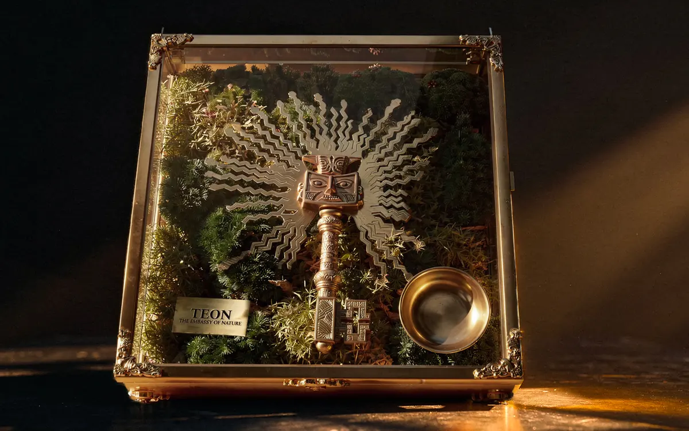
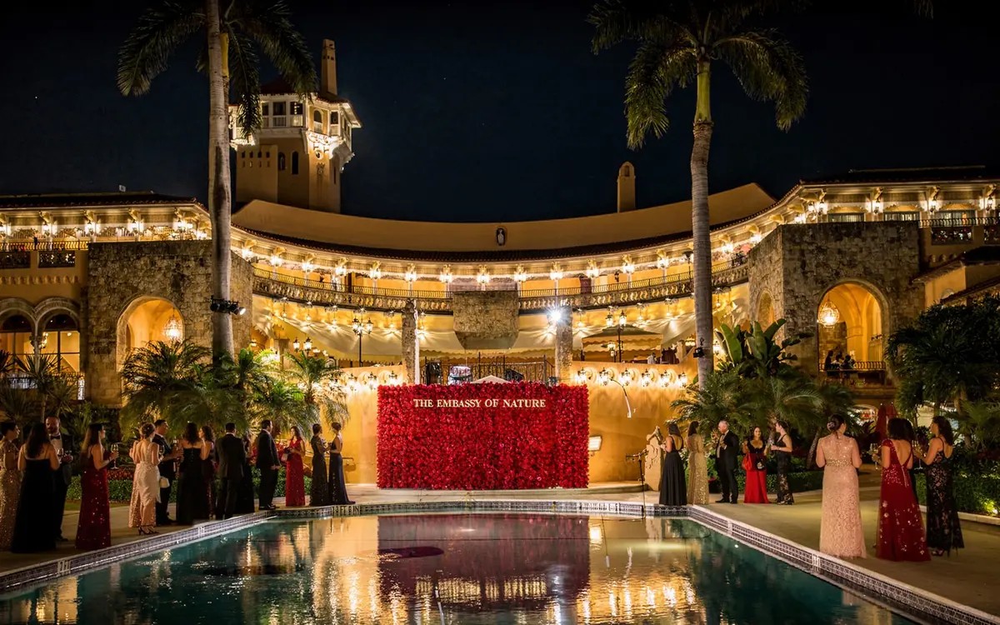
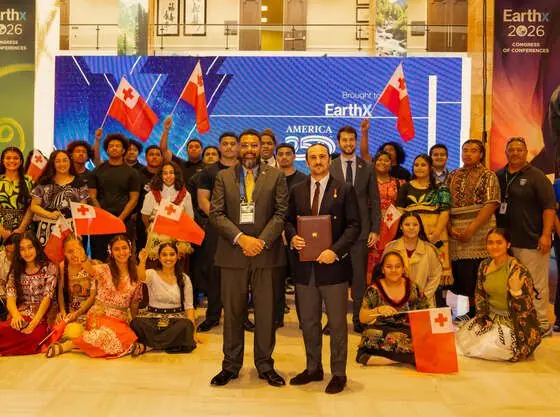

Un activo infravalorado
Los ecosistemas preservados producen agua, estabilidad climática, alimento e identidad, pero solo tienen precio cuando se extraen. Quien aprenda primero a valorarlos definirá el mercado.
Todo derecho requiere representación, y toda representación, una institución. TEON trabaja junto a las naciones para que el patrimonio natural se convierta en fuente de prosperidad, soberanía y valor a largo plazo, sin ser destruido.
Impulsada con el apoyo de la UN International Youth Organization y del Global Youth Leadership Program
Ese modelo extractivo, fragmentado y cortoplacista llegó a su límite: crisis ambientales, pérdida de identidad e inestabilidad económica y social.
El desafío del siglo XXI no es solo proteger la naturaleza. Es reconstruir la economía sobre nuevas fuentes de valor.
Las economías que sepan poner en valor lo que preservan liderarán este siglo. TEON existe para organizar esa transición.
Integra la naturaleza, la cultura y la identidad como activos estratégicos de la economía contemporánea. No a través de la filantropía. No a través del activismo. A través del restablecimiento de sistemas de valor, para que conservar pueda ser económicamente competitivo: junto a las naciones, nunca por encima de ellas.
El objetivo no es moralizar los mercados. El objetivo es que conservar sea económicamente competitivo. A este enfoque lo llamamos capitalismo ambiental.
Una plataforma creada para dar a la naturaleza una voz institucional como sujeto de derechos.
Una casa de la naturaleza: un lugar de presencia, cultura, diplomacia, dignidad y lenguaje civilizatorio.
Una propuesta para que la naturaleza preservada compita económicamente con la naturaleza explotada.
Un aliado no estatal que trabaja con gobiernos, comunidades e instituciones, con pleno respeto a sus leyes y a su soberanía.
Una forma de traducir el patrimonio natural, la cultura y la identidad en prosperidad, estabilidad y valor a largo plazo.
TEON no reemplaza a los gobiernos, a los organismos internacionales, a las comunidades ni a los marcos jurídicos existentes. Los complementa.
Si la naturaleza tiene derechos, el mundo debe desarrollar las instituciones, el lenguaje y los modelos económicos capaces de defenderlos.
La apuesta más estratégica de este siglo es el activo que aún no hemos destruido. Toda economía funciona gracias a la naturaleza, y casi nada de ella aparece en un balance. Las instituciones que aprendan a medir, proteger y estructurar esa riqueza darán forma a los mercados de las próximas décadas.
Los ecosistemas preservados producen agua, estabilidad climática, alimento e identidad, pero solo tienen precio cuando se extraen. Quien aprenda primero a valorarlos definirá el mercado.
Con el Marco Mundial de Biodiversidad de Kunming-Montreal, el mundo se comprometió a movilizar al menos 200.000 millones de dólares al año para la biodiversidad de aquí a 2030. Lo que falta son instituciones capaces de estructurarlo con rigor.
Las naciones tienen el patrimonio natural; los inversores, el capital. TEON se sitúa entre ambos como institución no estatal, junto a las naciones y nunca por encima de ellas, para que el valor se cree con soberanía y seguridad jurídica.
Una economía que no consume su propia base de activos crece a lo largo de generaciones, no de trimestres. Conservar deja de ser un costo y se convierte en la forma más duradera de riqueza.
Convertir el patrimonio natural en desarrollo, empleo y proyección internacional, sin ceder soberanía.
Acceder a una nueva clase de valor a largo plazo, estructurada dentro de marcos legales y medida con rigor financiero.
Sumarse a una arquitectura que da voz a la naturaleza donde se toman las decisiones económicas.
Cómo la naturaleza y la cultura se convierten en activos económicos estratégicos.
Diseñamos modelos económicos en los que la protección de los ecosistemas genera rentabilidad, empleo y estabilidad a largo plazo.
La conservación se convierte en economía real.

Transformamos la cultura y la identidad en infraestructura económica viva, que genera desarrollo y proyección internacional.
La cultura es un activo estratégico.

Facilitamos el diálogo entre gobiernos, organismos, empresas y comunidades como actor no estatal especializado.
La naturaleza se convierte en un lenguaje común.

Diseñamos y operamos plataformas territoriales que dan forma concreta a nuestra visión en proyectos alrededor del mundo.
Laboratorios de identidad e inversión.

Todo lo que The Embassy of Nature negocia, financia y defiende empieza en lugares como este.
Cada vez más naciones y tribunales reconocen a la naturaleza como sujeto de derechos, un movimiento del que Ecuador fue pionero al consagrarlos en su Constitución en 2008. TEON da a esa idea una institución. Estos son los ecosistemas que existe para representar: el capital natural del que depende toda economía.

Infraestructura hídrica natural: bosques que cosechan agua de las nubes y albergan gran parte de la biodiversidad del planeta.

Reservorios naturales que almacenan y regulan el agua de ciudades enteras.

Reservas de agua dulce en retroceso, de las que dependen la agricultura, la energía y las ciudades.

Donde el cambio climático se registra primero, y donde empiezan sus costos.

El mayor sumidero de carbono del planeta y fuente de alimento para miles de millones de personas.

Activos que todavía solo se valoran cuando se extraen. Valen más vivos.
Las instituciones se miden por dónde son recibidas y por lo que dejan firmado. Siete entradas del archivo de The Embassy of Nature.
Presentación oficial de TEON en la sede de las Naciones Unidas durante la semana de alto nivel de la Asamblea General: los intereses ecológicos, representados donde se reúnen las naciones.

La Declaración Universal sobre gobernanza y políticas públicas orientadas a la naturaleza, lanzada en Harvard el 18 de abril de 2026.

El restaurado Hôtel Hérouet, reabierto como casa de la naturaleza y la cultura.

La máxima distinción que otorga la institución, recibida por los exjefes de Gobierno Álvaro Uribe y Mariano Rajoy y por el presidente de la FIFA, Gianni Infantino. La institución ha sido recibida además por Su Majestad el Rey Felipe VI de España.

Acuerdos institucionales firmados en todo el hemisferio.


Donde el mandato se encuentra con sus mecenas.

De las asambleas nacionales a EarthX: el argumento viaja.

Más de la mitad del PIB mundial —unos 44 billones de dólares— depende moderada o altamente de la naturaleza. TEON existe para que aquello de lo que depende la economía sea, por fin, reconocido, medido y capaz de generar prosperidad.
Foro Económico Mundial, Nature Risk Rising, 2020.
Estas cifras no miden a TEON: miden el estado del planeta. Son los indicadores que TEON busca mejorar, y los publicamos para que cualquiera pueda seguir su evolución.
Fuentes: FAO, Evaluación de los Recursos Forestales Mundiales 2025 · UNEP-WCMC y UICN, Protected Planet Report 2024 · AIE, IRENA, UNSD, Banco Mundial y OMS, Tracking SDG 7, 2025 · Banco Mundial, PIB (US$ a precios actuales), 2025.
La institución es el instrumento. La línea base es el veredicto.
The Embassy of Nature opera bajo principios permanentes de legalidad, neutralidad política, transparencia y responsabilidad institucional, por los cuales acepta ser medida.
En todo, The Embassy of Nature mantiene pleno cumplimiento de los marcos jurídicos internacionales y nacionales en cada jurisdicción en la que actúa. Cada iniciativa se estructura dentro de instrumentos jurídicos reconocidos y se revisa con asesoría legal independiente, sin excepciones ni atajos.
The Embassy of Nature se mantiene independiente de toda agenda partidista, porque la naturaleza y la cultura trascienden los ciclos políticos. No acepta mandatos que subordinen la protección ecológica a calendarios electorales y trata con cada gobierno en términos iguales y no partidistas.
La gobernanza se ejerce a la vista. Los estados auditados, las cartas de gobernanza y los indicadores de impacto verificables se publican y renuevan cada año: una rendición de cuentas que el público puede leer, y no solo creer.
The Embassy of Nature responde ante sus partes interesadas, sus naciones socias y las comunidades cuya custodia se le confía, y trata esa confianza como el primer y más cuidado activo de la institución.
Integrar la naturaleza, la cultura y la identidad en sistemas reales de economía, inversión y toma de decisiones.
IIVisiónUna arquitectura institucional que integra la naturaleza en la economía, la gobernanza y la toma de decisiones globales, junto a las naciones.
IIIGarantíasLas garantías institucionales que rigen cada programa de TEON: soberanía, cooperación voluntaria, cumplimiento legal, complementariedad y contexto local.
Ese reconocimiento está tomando forma: en la ley, en los mercados y en las instituciones.
Escribir a la Embajada